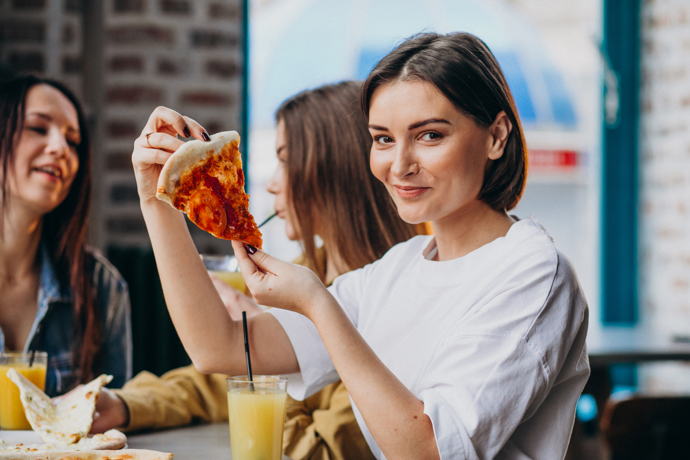
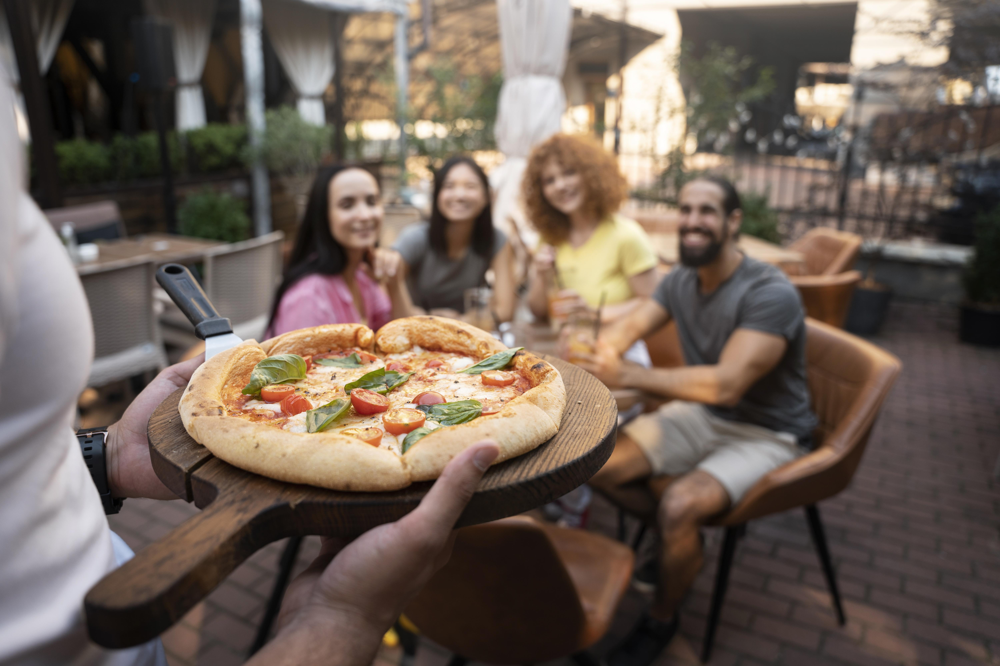
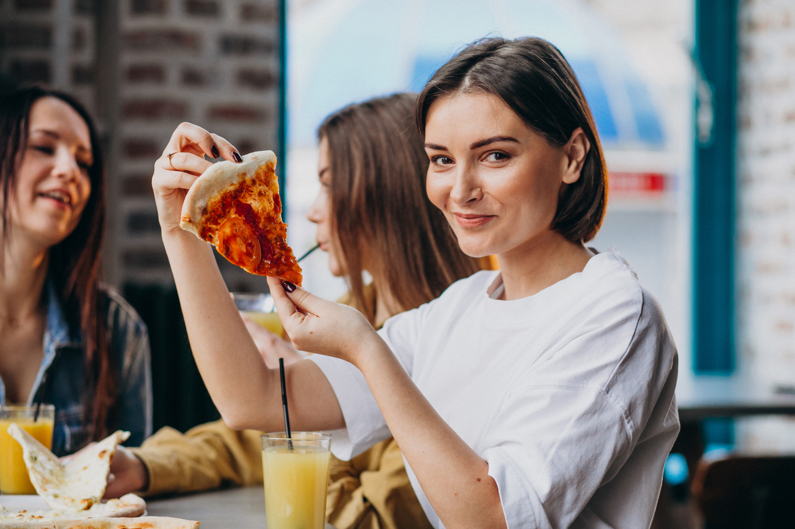
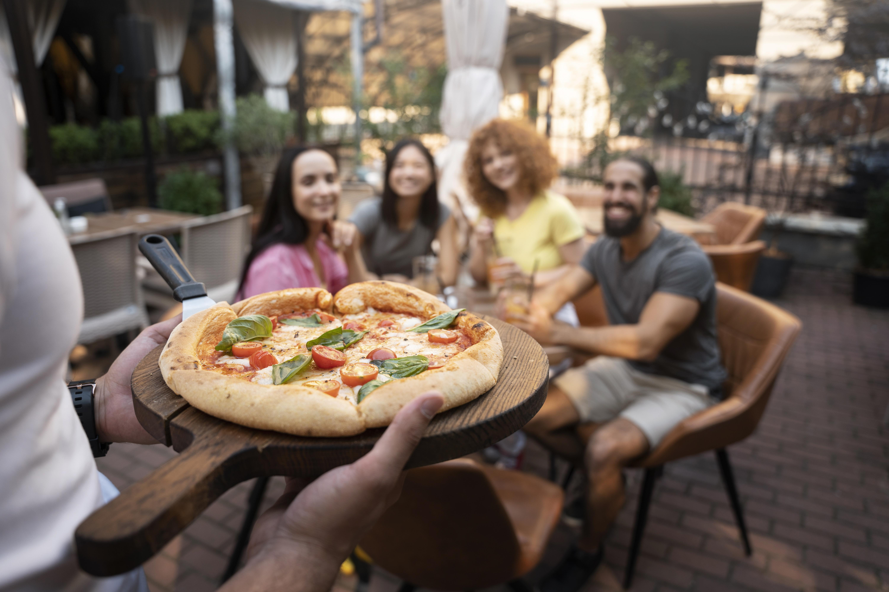

En PIZZERIA EN PUNTO, compartimos la misma pasión por la pizza y la auténtica cocina italiana. Para nosotros, la pizza no es simplemente una comida; es una experiencia gastronómica que va más allá de satisfacer el hambre. Es el placer de compartir momentos especiales con seres queridos alrededor de una mesa, disfrutando de sabores que nos conectan con la tradición y el amor por la buena comida.
Nuestra historia se remonta a 1982, cuando la familia Punten decidió dar vida a su sueño de compartir la auténtica esencia de la cocina italiana y la pasión por la pizza con la comunidad. Inspirados por sus raíces en una pequeña ciudad en el corazón de Italia, donde la tradición culinaria se transmitía de generación en generación, decidieron llevar sus sabores y recetas únicas a nuevos horizontes.
Con este objetivo en mente, abrieron las puertas de PIZZERIA EN PUNTO, un pequeño rincón de Italia en tierras extranjeras. Desde el principio, su visión de transmitir la esencia de la cocina italiana y la tradición familiar fue un éxito. Los lugareños y visitantes quedaron cautivados por el sabor auténtico de la pizza y la calidez con la que la familia los recibía en su pequeño pero acogedor establecimiento.
Cada pizza que salía del horno era una expresión de amor y tradición, y pronto se corrió la voz de que este lugar era el destino ideal para aquellos que buscaban experimentar la auténtica cocina italiana en todo su esplendor. A lo largo de los años, PIZZERIA EN PUNTO creció y evolucionó, manteniendo siempre el espíritu de una pizzería familiar y la esencia de la tradición italiana.
Hoy en día, PIZZERIA EN PUNTO sigue siendo un lugar icónico, donde clientes de todas partes vienen a disfrutar de la mejor pizza y auténticos platillos italianos. La familia Punten se enorgullece de ver cómo su sueño se ha convertido en una realidad próspera y cómo su legado culinario continúa deleitando a generaciones de comensales.
Nuestra misión es llevarles la verdadera esencia de la pizza italiana a cada uno de nuestros clientes. Cada pizza que preparamos es una muestra de nuestro amor y dedicación por la tradición culinaria, y estamos emocionados de compartir esa pasión con ustedes.
Además de nuestras exquisitas pizzas, ofrecemos una amplia variedad de deliciosos platillos inspirados en la cocina italiana. Desde pastas frescas hasta antipastos y postres irresistibles, hemos creado un menú que deleitará todos sus sentidos.
Valoramos profundamente la confianza que depositan en nosotros al elegirnos para satisfacer sus antojos de pizza. Por ello, nos esforzamos constantemente por superar sus expectativas y brindarles un servicio excepcional.
Gracias por formar parte de nuestra familia en "La Tradizione". Esperamos seguir compartiendo momentos inolvidables y sabores auténticos con cada visita. ¡Bienvenidos a nuestra pizzería familiar, donde cada bocado cuenta una historia de pasión y sabor!
En PIZZERIA EN PUNTO, nuestra satisfacción radica en ver a nuestros clientes disfrutar de momentos especiales alrededor de la mesa, compartiendo risas y creando recuerdos inolvidables. Cada día, nos esforzamos por llevarles la mejor experiencia culinaria posible, honrando las raíces de la cocina italiana y elevándola a nuevas alturas. Así que, desde lo más profundo de nuestro corazón, agradecemos a todos los que nos eligen para ser parte de sus momentos más preciados. Gracias por permitirnos compartir nuestra pasión y sabor con ustedes. Esperamos seguir siendo su destino favorito para deleitarse con la auténtica cocina italiana y la mejor pizza en cada visita a PIZZERIA EN PUNTO. ¡Bienvenidos siempre!